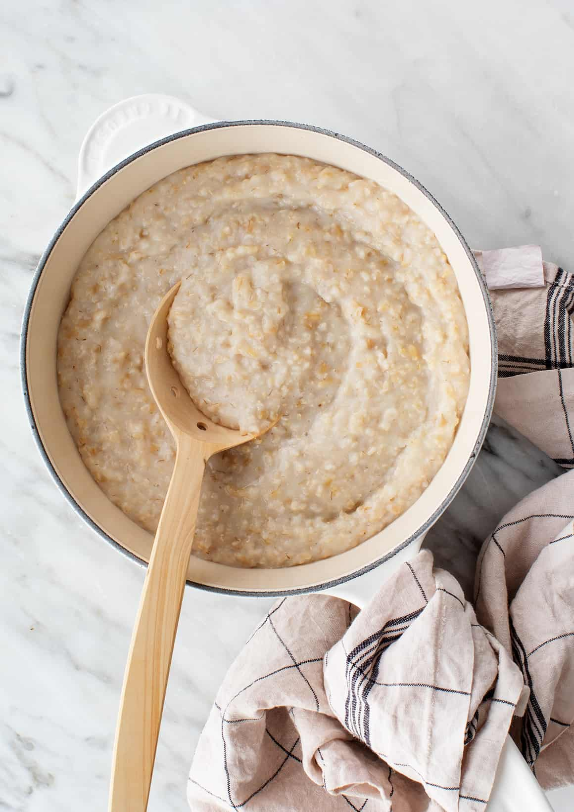

Porridge

Porridge is a simple meal made out of oatmeals and milk.
Ingredients
- 2 1/2 cups water
- 1 cup rolled oats
- 1 tablespoon white sugar
- 1 teaspoon salt
- 2 bananas, sliced
- 1 pinch ground cinnamon
- 1/2 cup cold milk (Optional)
Steps
- Combine water, oats, sugar, and salt in a saucepan. Add bananas and cinnamon. Bring to a boil, then reduce heat to low, and simmer until the liquid has been absorbed, stirring frequently.
- Pour into bowls, and top each with a splash of cold milk.